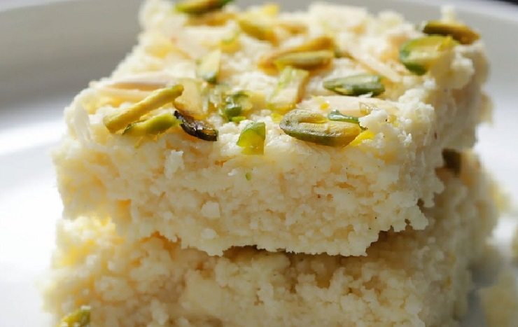
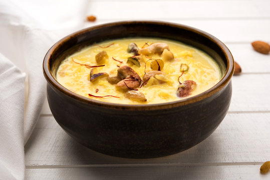
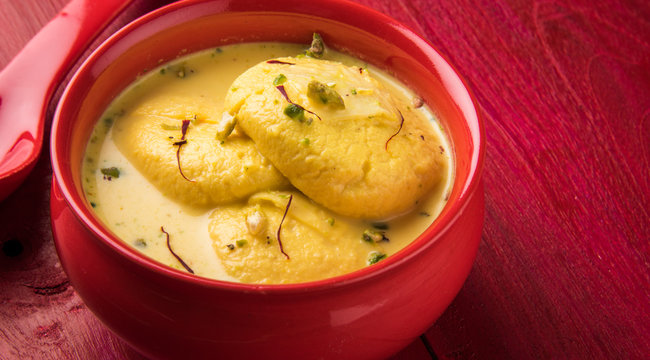
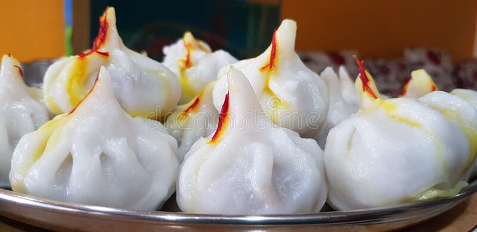

Gulab Jamun, a small waffle shaped balls deep fried and dipped in sugar syrup, popular in countries of the Indian subcontinent as India, Pakistan, Nepal and Bangladesh. The term Gulab jamun comes from Persian, Gulab means rosewater referring to the rosewater scented syrup and jamun from the hindi language, a South Asian fruit with similar size and shape.
The history says that Gulab jamun originates from an Arabic dessert called Luqmat Al-Qadi and became popular during the Mughal era. The dish was prepared in Rosewater syrup however saffron syrup and honey are also often used. Gulab jamun, one of the most melt in the mouth, yummy Indian dessert is often prepared during festival seasons, major celebrations like the Marriages, Diwali (the Indian festival of lights) and Eid-ul-Fitr and Eid al-Adha (Muslim festivals).
The whole process of making the motichoor ladoos took a lot of time and in between it started becoming dark. So by the time, I was finished, it was already dark. The ladoos were so good, we could not resist having the ladoos. So after some ladoos were over, I took the pics the next day of the remaining ladoos. Again next day, with a lot of things happening during the festive occasion, I ended up taking the final pics just before sunset. Hence the final pics have not come out well.

So, I was not sure of adding these motichoor ladoo recipe on the blog. Two days back, my husband bought some motichoor ladoos from a famous miThai shop nearby and asked me to taste it and compare with the ones I had made.
Rajasthani kalakand, also known as Alwar ka mawa, is an authentic Rajasthani sweet made by solidifying reduced milk and milk chenna (fresh paneer) with sugar and nuts. It was discovered by Baba Thakur Das in 1947 at Alwar (as per wikipedia). There is also a store called 'Baba Thakur Das & sons' in Alwar. In fact, the place where the store is situated is called 'Kalakand Market Road'!!

I was in Alwar for a couple of years during which i got to experience this otherwise less known city. If you happen to visit rural areas of this state and you are lucky enough, one can see peacock dance and Neelgais. Children here love to roam in the semi-jungle areas just to collect junglee karelas (Wild Bitter Gourd) and ber fruit (Jujube or Indian plum in English and Elandha pazham in Tamil). The junglee karele ki sabzi is made for rotis here and is a mouth watering dish, you won't know it is made with a bitter gourd variety! The main ingredient in their cooking is milk, ghee and curd.
In India milk is not just the morning glass you drink before you leave the house. Its uses transcend the dietary and nutritional aspects of human life. Milk in India, takes us to a realm that is not mere devotion but to the depths of spirituality that deals with Hindu philosophy and evolution of earth and mankind. Milk’s special importance in India goes back to the Hindu mythology, as legend goes, “Samudra Manthan” also known as the churning of the ocean of milk, brought forth the drink of immortalit

the “Amrit” (nectar). Milk and its products have a holistic use for religious purposes because it is believed to have purifying qualities. The precedence of milk in Indian life is such that it plays major roles in the form of rituals from the beginning (as an infant’s first food) and end of human life (last ritual after death).As India is a country with not just one cultural abode but rather many in number, capturing the essence of milk in a dish which is to be similar in every Indian state in its preparation and its use was a strenuous task. After much study on all possible dishes made from milk
Rasmalai tops the chart as the exotic festive sweet. Rasmalai is a combination of two words “Ras” meaning juice and “Malai” meaning cream. The dessert is also described as a rich cheese cake without a crust. The name itself is exotic and denotes the richness of this delicate Indian sweet. Rasmalai undoubtedly tops the list of all Indian milk based desserts. Rasmalai is a dessert originating from the eastern part of India as almost all the milk and cream based desserts originated in that part of India.

According to one of the local sweet shops in Kolkata, this Bengali origin dessert was first made and perfected by KC Das. Although these claims are not easily verifiable. Another dessert popular and originated from Eastern India is the Rasgulla also known as the sponge Rasgulla due to its spongy texture. An important factor while cooking any food item is the water used in the preparation.
Modak is considered to be the favourite sweet of the Hindu deity, Ganesha.[1] From it he gets the moniker modakapriya (one who likes modak) in Sanskrit.

During Ganesh Chaturthi, the puja usually concludes with an offering of 21 or 101 modaks to Ganesha as prasadam. Modaks made with rice flour shells are often preferred for this purpose, although wheat shell versions are also used. Local businesses outside Ganesh Temples across India usually sell pre-packed/ready-made versions of Modaks. Modak (devanagari: मोदक ) (Japanese: 歓喜団) is an Indian sweet popular in many parts of India. The sweet filling on the inside of a modak consists of freshly grated coconut and jaggery while the outer soft shell is made from rice flour or wheat flour mixed with khava or maida flour. The modak can be fried or steamed.
Doodh peda recipe with step by step photos. This peda recipe made with khoya or mawa is one of the popular Indian sweets. You will get milk peda in any miThai shop in India. Making peda with khoya is easy, quick and does not take much time. These milk pedas taste super delicious and are just like the pedas you get in miThai shops.

There are many varieties of peda that can be made by adding various dry fruits, flavorings like saffron or cardamom powder or rose water and some more ingredients like milk powder or coconut etc. I have already shared Milk peda recipe made using condensed milk.